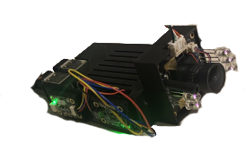
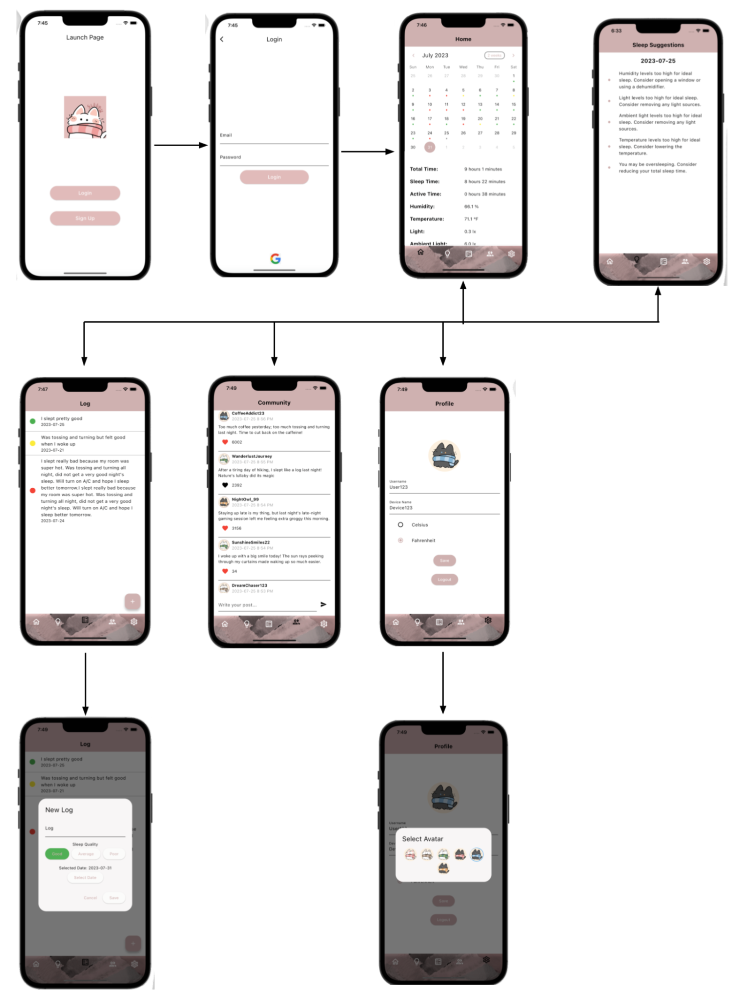

Research Project Sleep App & Sensor
Coding Minds Academy
I had the privilege of leading the team in the development of a groundbreaking sleep improvement application. Leveraging Flutter, we ensured a cross-platform, aesthetically pleasing, and seamless user experience, accessible to both Android and iPhone users.
Under the hood, we harnessed the power of a Raspberry Pi and Python for the app's backend infrastructure. This combination allowed us to efficiently process data from an array of sensors, including cameras, lights, sounds, and more. By analyzing this data, our app delivers tailored recommendations to enhance sleep quality based on individual sleep environments.
Navigating the app is intuitive – users input their sensor ID to access comprehensive sleep data presented on a user-friendly calendar interface. Users can also subjectively assess their sleep quality by selecting 'good,' 'average,' or 'poor,' and provide qualitative insights. Additionally, our community feature fosters knowledge sharing among users, incorporating a filter to maintain a respectful atmosphere. In case of disruptive behavior, users have the option to block others, ensuring a safe and constructive environment.
Affordability and inclusivity were paramount in our design philosophy, making the app accessible to a wide demographic. Our users have reported significant improvements in sleep health and routine adherence when following the app's recommendations, reinforcing its status as a comprehensive sleep management tool.
